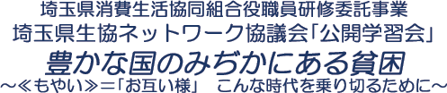
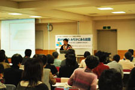

【日 時】
２月22日(月)
【場 所】 さいたまコープコーププラザ浦和
【参加者】
73人(うち生協ネットワーク協議会委員23人)
■
学習会
講師：
冨樫 匡孝氏
（ＮＰＯ法人自立サポートセンタースタッフ）
＜概要＞

年越し派遣村は、ニュースで報道され、ご存じの人も多いと思いますが、全てが正しく伝えられているわけではありません。ニュースに敏感になること、本当かなと考え調べることも必要。
相談者は男女比９対１で男性が多く、そのほとんどがパート勤務等非正規雇用者。非正規雇用者の生活は非常に厳しい。収入は生活保護の支給額を下回り、労働基準法で定められている最低賃金に届かないだけでなく過酷な労働条件での仕事が多い。
生まれた環境で将来が左右されることも多く、子供の時から格差が生まれている。守られるべきものが守られない時に貧困が起きます。
社会保障を充実し、セーフティーネットを整備することがトータルで社会的コストの低減につながります。
自分たちができることは、現場に出かけて行くことであり、気持ちを共有することです。自分ができる範囲のことをし、それをつまらないことだとは思わないで続けてほしい。また、自分とは関係ないと思わないでください。
＜質疑応答＞(抜粋)
○
「もやい」の運営はどのようにされているのですか。スタッフに給料のようなものはあるのですか。
→
全てカンパです。事務員二人には給料があります。私のようなスタッフは給料というほどのものは出ていません。
参加者の感想(抜粋)
☆
初めて参加しましたが、実体験からのお話はとても勉強になりました。
☆
正直なところ「ホームレスになる人は自分たちと違う人たち」という偏見を持っていましたが、今日のお話を聞き、貧困層の拡大は社会システムが構築されていないためとわかりました。本当に身近な問題だと気付きました。これからはもっといろいろなことを学習していきたいです。